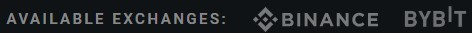

CRYPTO NEWS TRADING TERMIAL
Trade ahead of the crypto market
Get access to real-time news, charts, and trading tools. Sign up now for our free beta test period available only to the first 500 users. The beta period starts in early 2023.
E-mail is required
LATEST NEWS SHOWCASE
Real-time news
While we get ready to launch our full terminal, we want to give you a sneak peek at some of the features that 0xTerminal has to offer. This section is intended for testing purposes only and does not include the full panoply of features that will be available in our beta terminal such as one-click trades, smart notifications, historical charts, data expolorer and more.
Disclaimer: Please note that the information displayed on our website is sourced from exchange APIs and should be used with caution. Our news data is provided by the MadNews WebSocket and is enhanced by our infrastructure. We are grateful to MadNews for allowing us to use their data during our beta period. We cannot be held liable for any mistakes or inaccuracies in the information or any capital losses that may occur as a result of trading. It is important to do your own research and only invest what you can afford to lose. Trading digital assets carries significant risk and can result in the loss of your invested capital. Please ensure that you fully understand the risks involved and consider your level of experience and investment objectives before making any decisions. We cannot be held responsible for any pricing, display, or calculation errors on our terminal.
News trading terminal
Real-time crypto related news, price charts, smart notifications, one-click trades, and more.

Features
Core features
Real-time crypto news
Get a competitive edge with real-time news updates from over 500 sources, delivered to you with an average delay of less than one second.
Real-time charts
Track the impact of news on the market with real-time charts and make better trading decisions.
Data exploration
A robust set of query tools that allow you to easily access and analyze historical data. You can search for specific news articles based on market data or news performance and filter the results based on your needs.
Ticker detection
Our ticker detection feature uses an algorithm to automatically identify coin tickers in news stories, making it quick and easy for you to trade on the latest news.
Intuitive interface
Easily navigate and find the information you need with our intuitive, lightweight and mobile-friendly interface.
Trading features
Fast trading actions
Setup your exchange API key (Binance/Bybit), customize your trading buttons and leverage according to your risk management preferences and access them instantly from the news items.
Market and limit orders
Choose from market or limit orders according to your trading strategy.
Stop-loss & Take-profit
Setup stop-loss and take-profit levels at which you want to sell or buy a coin in order to limit the risk and maximize your profits.
Notifications
Smart notifications (beta)
Our smart notifications feature uses advanced algorithms to analyze the real-time impact of news stories and sends you notifications only for news stories that may have a significant impact.
Native notifications
Receive alerts and updates directly on your device, so you never miss an important news event or market movement.
Security
Secure on-device API key storage
We do not store API keys on our servers; instead, everything is stored on-device, in your browser, and encrypted to protect your data and trades.
Don't miss out on the opportunity to be one of the first to try it out! Our free beta test period is available only to the first 500 users, so don't delay and sign up today.
FAQ
What is News Trading?
News trading is a trading strategy that involves staying up-to-date with the latest news and events related to the market and using that information to make trading decisions. News traders aim to identify potential opportunities and risks in the market by following news stories and analyzing market data. They may look for news stories that could have an impact on the market, such as regulatory changes, company announcements, or economic indicators, and use that information to inform their trading decisions.
One of the main benefits of news trading is the potential to capitalize on market-moving events. By staying on top of the latest news and reacting quickly, traders can potentially profit from such events. News traders may also use the news to identify trends and shifts in the market, which can help them make more informed trading decisions and potentially increase their profits.
However, news trading also carries risks. One of the main risks is the possibility of making emotional or hasty decisions based on news headlines. It's important for traders to approach news stories with a critical eye and consider the potential impact on the market before making any trades. Another risk is the potential for false or misleading news stories to spread and influence the market. In order to minimize these risks, it's important for news traders to verify news stories and seek out reliable sources before making any trading decisions based on them.
Is News Trading Complex strategy ?
News trading can be a complex and challenging strategy, as there are often many news stories and events that could potentially impact the market. With hundreds or even thousands of news stories being published every day, it can be overwhelming to keep track of them all and determine which ones are worth paying attention to.
One of the main challenges of news trading is the need to identify which news stories are likely to have a significant impact on the market. Not all news stories will have a big effect on the market, and it's important to be able to differentiate between news that is likely to move the market and news that is less relevant. This requires a careful analysis of the news story and an understanding of the market and its dynamics.
What is OxTerminal ?
0xTerminal is a crypto news trading terminal that helps traders stay on top of the latest news and events related to the cryptocurrency market. Our platform offers real-time news updates, trading tools, and a secure platform for traders to make informed decisions and capitalize on market movements. With 0xTerminal, you can trade on the latest news and events in the crypto market, and stay ahead of the game.
Why the Beta is limited to 500 first users ?
We are limiting the beta test period to 500 users in order to ensure that we can provide the best possible experience for our early adopters. By limiting the number of users, we can make sure that our platform is running smoothly and that our team is able to address any issues or feedback that may come up. We want to make sure that our beta testers have the best possible experience and can provide valuable feedback that will help us improve and refine 0xTerminal. We appreciate your understanding and look forward to welcoming you to the beta program.
Additionally, the first 500 beta testers will be considered as "OG" users and may potentially receive special perks in the future as a thank you for their early support 👀
When will the beta test period start ?
The beta test period will start in early 2023. We will announce it on our Twitter account.
0xTerminal
A platform that enables traders to stay informed on the latest news and events in the crypto market and take advantage of potential opportunities through informed trading decisions.
- Home
- News
- Terminal
- Features
- FAQ
- Contact
Don't miss out on the opportunity to be one of the first to try it out ! Sign up for our free beta period now: